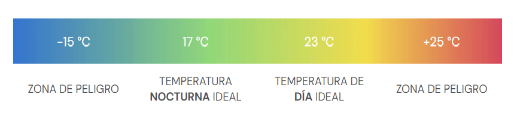
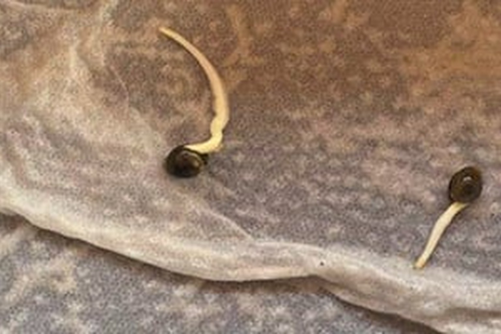
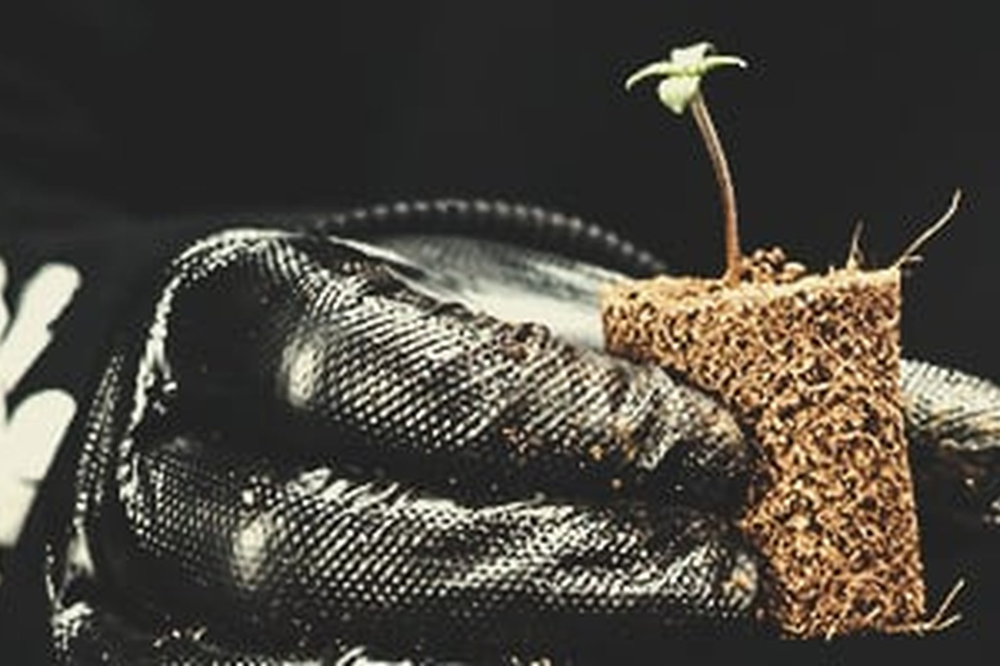
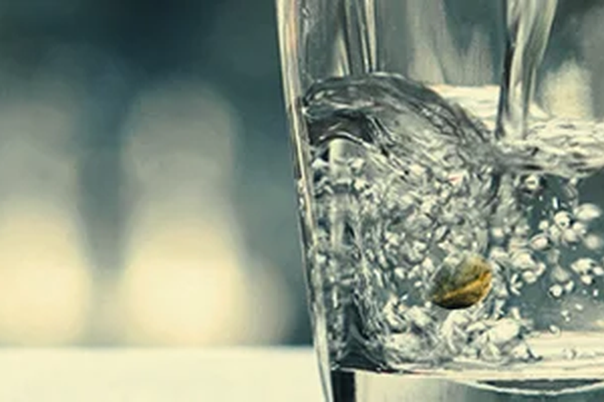

Guía de germinación
La Temperatura De Germinación Juega Un Papel Crucial
Antes de saltar directamente a los métodos de germinación, hay un par de reglas de oro de germinación. Para obtener los mejores resultados, recomendamos mantenerse dentro de estas pautas, sin importar cómo elija germinar. Dicho esto, de todos los factores a considerar, la temperatura es una de las más críticas. Las semillas siempre buscarán incluso la menor cantidad de humedad, pero utilizan la temperatura como una señal de que necesitan hacerlo.
- La temperatura ideal está entre 22° y 25°C (71–77°F).
- Su entorno de crecimiento debe ser húmedo/húmedo, pero nunca mojado.
- El rango de humedad relativo debe estar entre el 70% y el 90%.
- Las semillas favorecen la iluminación LED FRIO (5.000 – 10.000 Lumenes).
- Minimice la cantidad de manejo de semillas que hace.
- En los tapones hidropónicos / de lana de roca, el valor de pH ideal es de 5.8 a 6.2.
Método de toalla de cocina húmeda
Probablemente uno de los métodos más comunes de germinación. El método de la toalla de cocina. Algunos cultivadores usan almohadillas de lana de algodón o trozos de papel absorbentes. Para esta guía, usaremos una toalla de cocina, ya que está disponible y retiene la humedad relativamente bien.
- Coloque una hoja de toalla de cocina húmeda sobre una superficie plana (DENTRO DE 1 PLATO).
- Espacie sus semillas unos centímetros antes de colocar la segunda pieza de toalla de cocina sobre la parte superior (TAPAR CON OTRO PLATO).
- Debe asegurarse de que ambas piezas estén húmedas, No Mojadas.
- Una vez más, cuando las puntas de la raíz blanca alcancen de 1 a 2 cm, mueva las semillas (con cuidado) a las macetas del suelo.
Jiffy Plug De Enraizamiento
Los jiffys son una buena herramienta para sembrar y germinar semillas y esquejes y poder cultivar plantas de una forma fácil. Está compuesto por turba prensada y fibra de coco que al humedecerse llega a aumentar hasta 7 veces su tamaño, ofreciendo un buen sustrato para la germinación de las semillas.
- Ponga los discos de Jiffy en una bandeja de siembra.
- Remoje los discos con agua tibia.
- Espere unos minutos a que se hidraten y retire el exceso de agua de la bandeja.
- Siembre las semillas o los esquejes en el centro, presione un poco.
- Cuando las semillas broten o el esqueje muestre raíces, trasplante a su lugar definitivo.
Directo en Vaso de Agua
Podría decirse que uno de los métodos menos eficaces, pero sigue siendo viable. Increíblemente simple de facilitar, los cultivadores principiantes pueden optar por germinar sus semillas en un vaso de agua, recipiente que sea de aproximadamente 22°C (71°F).
Después de 3-5 días, las semillas comenzarán a abrirse, y deberías ver pequeñas puntas blancas. Una vez que estas raíces alcancen de 1 a 2 cm de longitud, use un cuidado extremo para transferirlas del agua a macetas de tierra prepreparadas.
- Las macetas de tierra necesitarán pequeños agujeros (aproximadamente 10-15 mm de profundidad) para colocar las semillas recién germinadas.
- Una vez que las semillas estén seguras, querrá colocar una luz LED FRIO a 13-15 cm (5-6 pulgadas) de distancia para fomentar el crecimiento.
- Finalmente, no se arriesgue a regar en exceso sus semillas en esta etapa temprana.